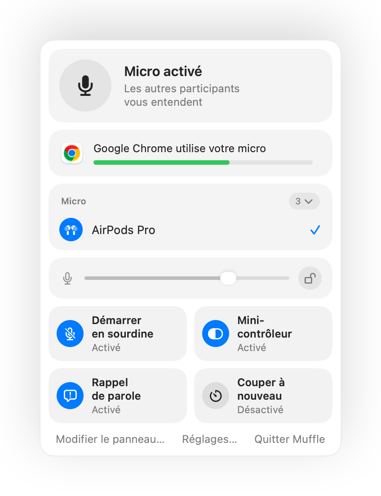

Comment couper le micro Zoom avec des AirPods ou un raccourci sur Mac
Le raccourci clavier de Zoom, Commande-Maj-A, ne fonctionne que lorsque Zoom est au premier plan. Si vous prenez des notes ou partagez une autre fenêtre, retrouver le bouton pour couper le son fait perdre de précieuses secondes.
Muffle vous offre une commande unique pour couper le son dans Zoom et toutes vos autres apps : vos AirPods, un raccourci global ou la barre des menus. Il coupe le micro au niveau matériel, aussi bien dans l'application Zoom que dans les réunions Zoom sur le web.
Couper le micro dans Zoom depuis n'importe où
- 1
Installez Muffle et autorisez l'accès au micro.
- 2
Rejoignez votre réunion Zoom habituelle.
- 3
Appuyez sur la tige de vos AirPods ou sur Contrôle-Option-M pour couper le micro, depuis n'importe quelle app.
- 4
En sourdine, maintenez Contrôle-Option-M pour parler, puis relâchez pour couper à nouveau.

- Si Zoom prend en charge l'appui AirPods directement sur votre Mac, le raccourci et la barre des menus continuent de couper votre micro via Muffle.
- Zoom peut afficher votre micro comme activé alors que Muffle l'a coupé. Les participants entendent un silence parfait.
Questions fréquentes
Muffle remplace-t-il le bouton de sourdine de Zoom ?
Il fonctionne en parallèle. Muffle coupe le micro pour l'ensemble du système, ce qui vous permet de couper le son dans Zoom sans changer d'application active.
Puis-je parler temporairement en maintenant une touche dans Zoom ?
Oui. En sourdine, maintenez le raccourci de Muffle enfoncé pour parler. Cela fonctionne dans Zoom ainsi que dans toutes vos autres apps.